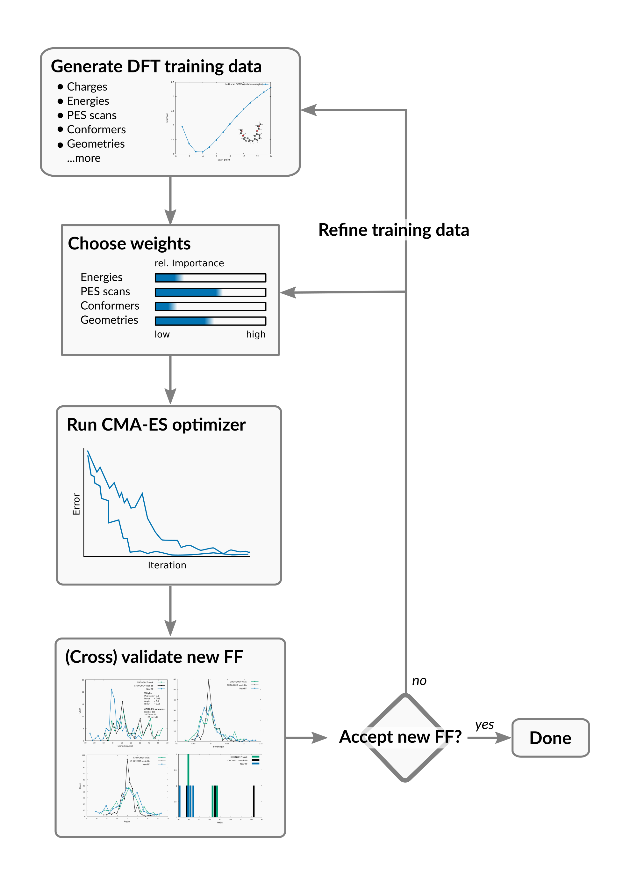
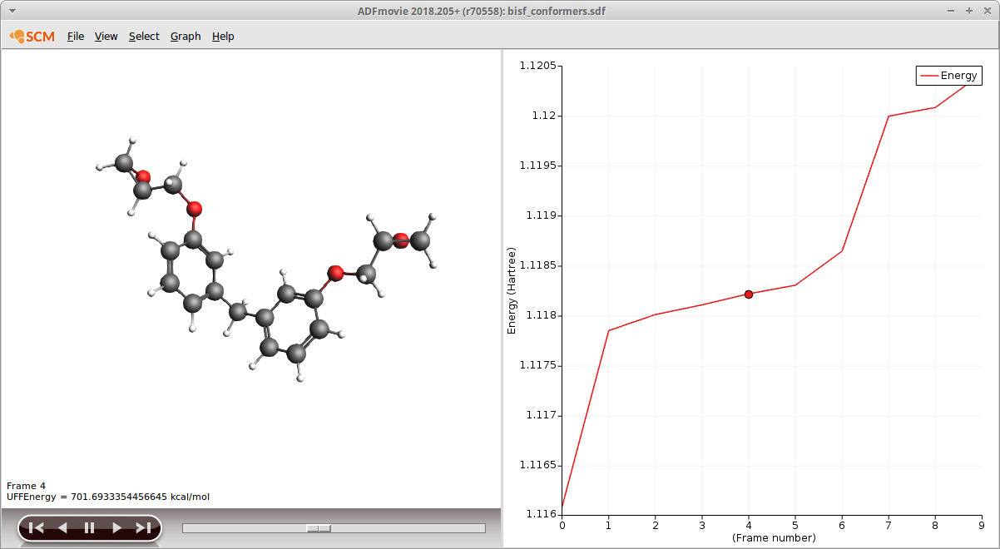
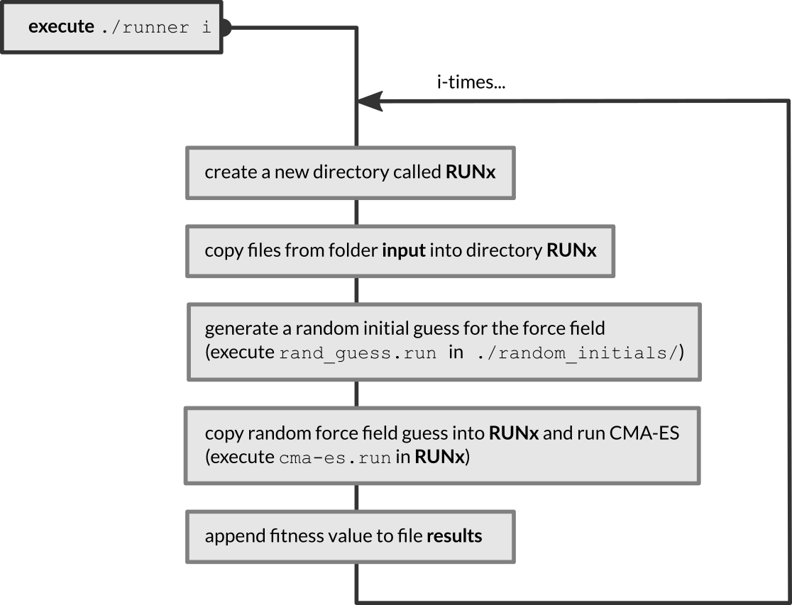
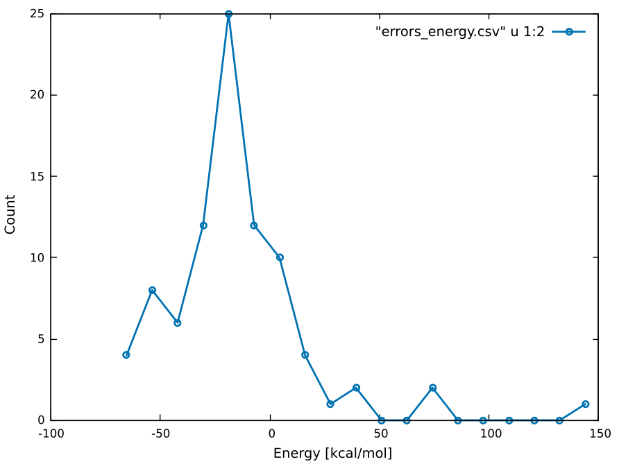
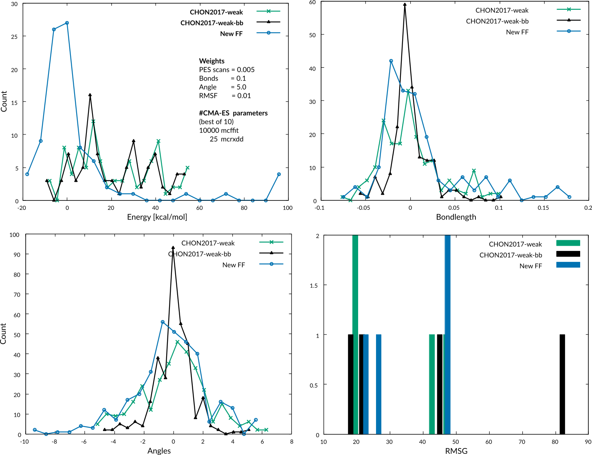

Reparametrizing ReaxFF with the CMA-ES optimizer¶
Overview of the workflow¶
This advanced ReaxFF tutorial will demonstrate how to fit ReaxFF parameters to create a new force field.
The reparametrization workflow consists of the following steps:
- Generating the reference data, e.g. running DFT calculations
- Choose weights of the objective function , i.e. set relative importance of reference entries
- Fit a new force field to the reference data
- Cross-validate the new force field
- If needed: refine training set (add entries, adjust weights…) and re-fit, cross-validate,…
Tip
Backup your geo and trainset.in files that you generate with
AMStrain at regular intervals, so that you do not accidentally overwrite
them.
In the first section you will learn how to generate various types of reference data using the compute engines in AMS2019, e.g. ADF, BAND, Quantum Espresso, DFTB…
The force field optimization algorithm requires the evaluation of an objective function (aka cost function). For ReaxFF the objective function takes the form:
where the sum runs over all training set entries. Each difference between the reference property (xi,ref) and the ReaxFF value - calculated with your new force field - (xi,ReaxFF) is weighted individually via the weightings σi. The weightings, σi, can be set automatically but will most likely need to be refined manually during the fitting process.
Once the objective function has been set up, the CMA-ES optimizer can be used to fit a set of new parameters. Since the force field optimizers included in AMS, MCFF and CMA-ES, are stochastic optimization algorithms, it is advised to run them multiple times, possibly starting from different/random starting conditions. The force fields with the lowest overall value of the objective function can then be tested in a cross-validation scheme.
It’s advised to validate a newly fitted force field by testing it on a set of references that were not used during the training of the force field. This serves as a simple measure against overfitting and provides some direct information on the transferability of the new parameters.
Tip
If you are familiar with Python programming, you can also fit ReaxFF force fields using the ParAMS python package included in AMS.
Generating reference data¶
Introduction¶
The tutorial is inspired by the work done by A. Vashisth and coworkers on re-fitting an existing ReaxFF force field for usage with the novel bond boost acceleration method:
Like in the paper, the parameters related to C-O, C-N and N-H in the force field CHON-2017_weak.ff are going to be refitted. Both the initial force field and the refitted force field from the paper (CHON-2017_weak_bb.ff) are shipped with AMS2019, so you can compare both with the force field you are going to create in this tutorial.
Note
At this moment, the tutorial provides a suitable initial guess and parameter ranges for the force field optimization. In the near future, this important aspect will be covered by this tutorial as well.
The training set will contain the following types of training data:
Note
This is just a subset of possible training set entries. A more comprehensive list of entries can be found in the documentation of the trainset.in file format.
Preparation¶
Download the tutorial package CMA-ES-FIT.zip and unpack its contents into a location where you have read and write permissions.
On a Windows computer, the ADF_DATA directory is a good location for the tutorial package.
Preparation: Set up a DFTB3 preset¶
Each of the training set entries is explained for one compound in detail within its own subsection. It’s your task to apply the same calculation for the other compounds to successively build up a training set.
To guide the process, each subsection concludes with a small checklist of training set entries that you should create before moving on to the next chapter. It might seem like a lot for just a tutorial, but keep in mind that not all entries are used for the fitting, some will be used for cross-validating the fitted force fields!
Throughout this tutorial the following level of theory will be used
- Task: Single Point
- DFTB3
- Dispersion correction: D3-BJ
- Parameterset: DFTB.org/3ob-3-1
This setup - referred to as DFTB3 from now on - marks a good compromise between computational speed and efficiency.
For fast access to these settings, save a new preset in AMSinput:
- File → Preset → Save as preset…Enter
DFTB3and press Save
Now a DFTB3 single point can be requested with just one click:
- File → Preset → DFTB3
Note
By using DFTB3 references in the training set, we will introduce an inconsistency in the force field: Part of the parameters were fit against DFT, the rest against DFTB. In a real-life application this inconsistency should be avoided by either refitting all parameters or (preferably) re-calculating the current training set entries with DFT.
Optimized geometries¶
The optimized reference structure is added to the training set and a set of target values (bond lengths, angles, energies, etc…) has to be defined as a measure. During each(!) evaluation of the objective function, ReaxFF will perform a geometry optimization with the current force field guess. This optimization starts from the reference structure in the training set and once the geometry optimization has ended - converged or not - the target values are compared with the references in the training set. Since geometry optimizations are computationally demanding, a good approach is to limit the max. number of geometry optimization steps to a small number…- just large enough to be able to detect whether or not it diverges from the reference.
Warning
A typical CMA-ES run requires several tens of thousands evaluations of the objective function. Even if a single ReaxFF geometry optimization might seem almost instant, the computational effort very quickly piles up, e.g. going from minutes to days. The use of geometry optimizations in training data should be well thought out.
As a first step in building up a training set, add the optimized geometries of the following three epoxy resins and the DETDA hardener to the training data:
The structures can be drawn in AMSinput or just be imported from the folder xyz inside the tutorial package CMA-ES-FIT. After importing the coordinates into AMSinput, run a DFTB3 geometry optimization:
- File → Import CoordinatesFile → Preset → DFTBIn the DFTB panel of AMSinput:Task → Geometry OptimizationSave and Run
Repeat the calculation for all four compounds (BisF, DETDA, TGAP and TGDDM). After the calculations have finished, open AMStrain: SCM → Train. Then, switch to AMSjobs (SCM → Jobs) to create a new ReaxFF training set from these geometry optimizations:
- Select the finished jobs in AMSjobs (hold down SHIFT to select multiple jobs)Job → Add To AMStrain
The four structures will be added to a new training set automatically. In the AMStrain window that pops up, the entries are marked bright red to indicate that they are selected. Geometries that have been added but are not yet used in the training set are considered an error and thus highlighted in light red.

To add all bonds and angles of the BisF molecule to the training set:
- Select the BisF entry by clicking on the System field next to itAdd → Add BondsAdd → Add Angles

Note how the BisF entry is not colored red anymore, now that we have defined a set of references for the training set from it. Repeat these steps for the remaining three compounds.
Warning
ReaxFF cannot handle system IDs that are longer than 20 characters.
Tip
Hold down the SHIFT key between two clicks on the system entries to select multiple entries.
To reduce the computational cost of the four geometry optimizations, we set the maximum number of iterations of the optimizer to 10:
- Double Click into one of the Details fieldsEnter
10as the Maximum iterationsClick OK


The general settings of the geometry optimizer, e.g. which optimizer will be used or whether or not the cell will be optimized, are defined at a later stage in a ReaxFF input file.
Add the following entries to your training set:
Checklist (Geo. Opt.)
---------------------
[ ] DETDA
[ ] BisF
[ ] TGAP
[ ] TGDDM
The weights assigned to the bond lengths and angles, 0.1 and 5.0, mark a good starting point and can be kept for now. Before continuing to the next chapter, save your training set
- File → Save
PES/Bond Scans¶
Scanning internal coordinates is very easily done with the help of the graphical user interface of AMS2020. The AMS driver provides a potential energy surface (PES) scan, so the setup and results will always look the same, regardless of the engine that was used to calculate them. As the name suggests, multiple coordinates can be scanned at the same time to construct a multi-dimensional surface. However, for this tutorial the use of one dimensional bond scans is sufficient. If needed, PES scans can be added to your training data in exactly the same way as the bond scans.
Tip
How to set up a PES scan calculation followed by a transition state search is discussed in the tutorial Transition state search and characterization of a Ziegler Natta Catalyst.
For the generation of ReaxFF training data, scanning a bond distance is probably the most common task. For our purpose we start by scanning the bonds that we know will be broken and formed during the polymerization reaction. Rather than use whole molecules we opt to use fragments to reduce computation cost, and improve reproducibility versus large flexible molecules. At the refinement stage - when comparing the first fitted force fields - it might show that more scans are need, e.g. different bond-, angle- or dihedral scans.
Start by importing the coordinates of fragment1 from the xyz directory of the tutorial package, which is a fragment of the DETDA hardener. Then, from within the DFTB input panel of AMSinput:
- Select the DFTB3 preset from File → Preset → DFTB3Change the task to PES ScanClick on
 Hold down the SHIFT key of the keyboard to select an N-H pairPress the “+” button next to N(11)H(8) distanceScan from
Hold down the SHIFT key of the keyboard to select an N-H pairPress the “+” button next to N(11)H(8) distanceScan from0.8to1.8A in15stepsSave & Run (name: fragment1_scan)Click yes if prompted to adjust the initial structure
When setting up the bond scan calculations, we try to choose the scan parameters such that we capture enough of the anharmonicity of the curve. The gradient (Graph → Gradient Max or Graph → Gradient Rms) displayed in AMSmovie is a good indicator for this criterion. Do not fully dissociate the molecule to avoid the bond breaking problems associated with HF and KS-DFT.
Once the calculation has finished, you can add the scan points to your training data. Open AMSjobs:
- Select the calculation, e.g. fragment1_scanJob → Add to AMStrain
If an instance of AMStrain is already opened, the new entries will be appended to training set. If not, a new instance of AMStrain is opened. In the latter case, just edit your training data as described and merge the two training sets using the Add command in the File menu. You can either save the current set and add it later to the training set that contains the geometry optimizations or you load the geometry optimizations into this training set.
Per default the energies are added relative to the point of lowest energy in the scan curve or on the PES and assigned a weight of 5.0. The default run type is the same as the one of the PES scan: A restricted geometry optimization, meaning that all coordinates except the scan coordinate are held fixed.
In this tutorial we shall use a single point calculation only for the bond scans. To change the run type for all entries at the same time:
- Select all new System entries (Hold down CTRL to select multiple entries)Click into the Detail field of the first entrySelect Single Point as TaskClick OK
Continue by adding the bond scans in the below checklist to your training set. Try to come up with reasonable scan ranges, don’t compress too far and don’t scan too far:
Checklist (Bond scans)
----------------------
[ ] N-H bond in fragment 1
----------------------
[ ] C-O bond of epoxy in fragment 2
--------------------------------------------------
[ ] An N-C bond in fragment 3
---------------------------------------------------
[ ] O-H bond in fragment 4
Before continuing to the next chapter, save your training set
- File → Save
Conformers¶
We can make use of the conformer functionality of the GUI to create conformers. The conformers are stored in an sdf file format that can directly be used from within AMSinput.
Begin by importing the structure of BisF from into AMSinput and generating 10 of its conformers. Switch to the conformer panel in AMSinput and request these settings
- Enter
10as the Number of conformationsEnter0.5as the RMS filterEnter0.5as the Final RMS filterSave asbisf_conformersand Run
Once the calculation has finished the results can be inspected in AMSmovie:
The energies displayed in AMSmovie stem from a UFF calculation and need to be recalculated using DFTB3. This can easily be done by using the sdf file from within AMSinput:
- In a new AMSinput, switch to the DFTB panelModel → CoordinatesUse Selected File from the dropdown menuClick on the folder icon Molecule from: and select bisf_conformers.sdf
The DFTB3 calculation we are about to set up now, will be applied individually to all entries in the sdf file. To re-load the DFTB3 preset:
- File → Preset → DFTB3Save as
bisf_conf_dftb3and Run
Once the calculation has finished you can import the results into the training set much as you did with the geometry optimizations earlier:
- Select the finished jobs in AMSjobs (hold down SHIFT to select multiple jobs)Job → Add To Training Set
Before setting up the energy entries in the training data we shorten the text of the System IDs as ReaxFF doesn’t allow IDs longer than 20 characters.
To remove the string _mol from all IDs:
- Select all SystemsTraining Set → Change SystemIDsType
_moland hit ENTERLeave the next field empty and hit ENTER
Again the System entries are marked red since the ReaxFF training data has not yet been defined. For this objective function the relative energies between the conformers and the according optimized geometry are used. To automatically add an energy curve to the training set:
- Select all of the conformer entriesHold down the CTRL key and additionally select the BisF Geo Opt system entryAdd → Energy Curve
Tip
To only display Systems, select Type → System in the dropdown menu above the training set entries. To display all entries, select Type → Show All.
Per default the lowest energy is chosen as the reference structures, in this case this will be the optimized geometry.

Add the following entries to your training set:
Checklist (Conformers)
----------------------
[ ] 10 conformers of BisF
[ ] 10 conformers of TGAP
[ ] 10 conformers of TGDDM
[ ] 5 conformers of DETDA
Before continuing to the next chapter, save your training set
- File → Save
Transition states / Trajectory snapshots¶
It is possible to optimize a transition state and include it in the training data, given that expected reactions are known beforehand. A good way to get started with transition state searches is by following the DFTB transition state and PES tutorial.
All three entries, reactants, transition state and products can then be added to the training data by exporting the according geometries from the GUI and adding the energies, charges, etc. to the training set. For the sake of simplicity, this current training set will not contain actual transition states. Though it might be worthwhile to try and optimize a transition state for the uncatalyzed reaction between one amine and an epoxide.
Instead an approximate energy profile of the reaction is used that we obtain by simply extracting some snapshots from two bond boost trajectories. To generate two suitable bond boost trajectories, just run the two input files located in the folder xyz/bond-boost-trajectories
Simply open the input file with AMSinput:
- File → Open (choose .ams input file)File → Run (or CTRL+R)
The calculation will take only a couple of seconds. Inspect the trajectories in AMSmovie, if you don’t see a reaction, re-run the calculation. Open the trajectory in AMSmovie and inspect the number of molecules to locate the moment the new cross linking bond is formed
- Properties → Number of Molecules
Save approx. 10-15 frames (only saving every 5th frame or so) that capture the reactive event. Use the arrow of your keyboard to move forward or backward a single frame. For example, these snapshots could look like the following

The structure shown in AMSmovie can be added to the training set directly:
- File → Add coordinates → To AMStrain (or directly via keyboard short CTRL+T)
Continue adding frames until you see the final H-transfer in these trajectory snapshots (see image above). Once all desired frames have been added to AMStrain, a DFTB3 job needs to be created and run on these structures to generate the reference data. From within AMStrain
- Select new systems (hold down CTRL or SHIFT to select multiple lines)Training Set → Generate Ref jobs…Select an .ams input file from a previous DFTB3 calculation (not the .ams file for the conformer run)Choose a directory for the new jobs
In the pop-up dialog you will be asked to select an example job. This job will be used as a pre-set.
Note
If the preset you choose in this steps conflicts with the settings specified in AMStrain, the AMStrain settings will be used. For example, if the system type is set to Single Point, even choosing an .ams file with a geometry optimization in it, will result in single point jobs.
Switch to AMSjobs to run the reference jobs:
- Select all reference jobsJob → Run (or CTRL+R)
It will typically take a couple of seconds to calculate the references. Once the calculation has finished, switch back to AMStrain and add the Energy curve like you did with the conformers:
- Select all the BisF-DETDA jobsAdd → Energy CurveSelect all the BisF_2-DETDA jobsAdd → Energy Curve

Next, add the following entries to your training set:
Checklist (Conformers)
----------------------
[ ] 10-15 snapshots from BisF-DETDA_BB
[ ] 10-15 snapshots from BisF_2-DETDA_BB
Before you continue…¶
At this stage you have created a first guess of your training set and it’s time to prepare the training set for the optimizer. Before doing so, let’s double check if all training set entries are present.
Your training set should now contain:
Reactants:
| Trainset entry | BisF | TGAP | TGDDM | DETDA |
|---|---|---|---|---|
| Geo.Opt. | 1 | 1 | 1 | 1 |
| Conformers | 10 | 10 | 10 | 5 |
Bond scans:
| Trainset entry | Nr. of points |
|---|---|
| Bond scan points: N-H fragment 1 | 15 |
| Bond scan points: C-O fragment 2 | 15 |
| Bond scan points: N-C fragment 3 | 15 |
| Bond scan points: O-H fragment 4 | 15 |
Snapshots of the reaction:
| Trajectory | Nr. of snapshots |
|---|---|
| BisF-DETDA bond boost | 10-15 |
| BisF-BisF-DETDA bond boost | 10-15 |
Tip
Use the text field next to the magnifying glass at the bottom of the AMStrain window, to refine what training set entries are displayed.
For example: You only want to see entries related to BisF? Just type bisf into the textfield and the GUI will filter the entries for you.
As a starter, try some of the following filters: system (only the systems), energy (only energies) and geo (only entries related to Geo. Opt.)
It is possible to continue the tutorial with less or different training data than the above but the results will be different in this case.
Preparing the training data¶
In this subsection we assign weights to the training data and split the data in one set used for fitting the new force field and one set used for testing the new force field.
Note
At this moment, the package CMA-ES-FIT contains an initial guess and suitable parameter ranges for the force field optimization. In the near future, this important aspect will be coverd by this tutorial as well.
Assigning weights¶
Some remarks on weights
The force field optimization algorithm requires the evaluation of an objective function. For ReaxFF the objective function takes the form:
where the sum runs over all training set entries. Each difference between the reference property (xi,ref) and the ReaxFF value - calculated with your new force field - (xi,ReaxFF) is weighted individually via the weightings σi. The weightings, σi, can be set automatically but will most likely need to be refined manually during the fitting process.
If you look at the weights in the above function more closely, you might spot that they can be interpreted in terms of an accuracy or rather a desired accuracy as you don’t know beforehand which accuracy the fitting process will yield in the end. When coming up with weights this view can guide your initial guesses. However, it should also be kept in mind that the relative values of the weights are important too as discussed in the below example.
Let’s assume you have a medium sized organic molecule and you assign a weight of 0.01 to all C-H and all C-O bonds. This scheme will probably not result in a very high accuracy of the C-O bond energies. Why? Simply because there will be much, much more C-H bonds in the system than C-O bonds. Since all errors are going to be summed up, even small changes in the C-H bond energies will affect the value of the objective function more than a medium change in the C-O bond. The optimizer “sees” only a single number, so it’s important to make sure that the objective function is balanced (hence the usage of the terms weight) - or - if it’s biased, it should be biased towards the entries you consider important for your system.
If this left you puzzled, why not take a look at the weights that were used in the published Co trainingset to gain some further inspiration?
Assigning weights with AMStrain
Within AMStrain the weights are referred to as Accuracy and can directly be entered into the according field. Multiple entries can be edited at the same time as follows:
- Select the entries (hold down SHIFT to select multiple entries)Edit the Accuracy
As an initial guess, assign the following weights to the training set entries:
| Entry | Weight |
|---|---|
| Geo: angle | 5.0 |
| Geo: distance | 0.1 |
| Energy (bond scans) | 0.01 |
| Energy (all other) | 0.1 |
Splitting the training data¶
The objective of this approach is to test the transferability and robustness of the newly generated parameters.
As opposed to the more sophisticated cross-validation schemes, we will just use our chemical intuition to generate a validation set that should ideally exhibit a similar but not exactly the same chemistry as the set used for training. This criteria can be met by simply moving one of the epoxy compounds, TGDDM, from the training data into the validation set alongside some randomly select entries of the other epoxies:
| Entry | Training set | Validation set |
|---|---|---|
| Geo. Opt. (BisF,TGAP, DETDA) | All | |
| Geo. Opt. - TGDDM | All | |
| Conformers (BisF,TGAP) | 8 | 2 |
| Conformers - DETDA | 4 | 1 |
| Conformers - TGDDM | 10 | |
| Traj. Snapshots | All | |
| Bond scans (BisF,TGAP,DETDA) | All | |
| Bond scans - TGDDM | All |
Instead of actually removing entries from the training set it is easier to just disable entries that should not be used when constructing the error function. Before continuing with editing, save the training set in a location outside the folder CMA-ES-FIT:
- File → Save
Let’s start with generating the training set first. To remove all training set entries related the geometry optimization of TGDDM, disable the according system entry. Thus all related entries that use that system will be undefined and easy to locate in the GUI:
- Type
systeminto the filterSelect the TGDDM geometry optimizationTraining Set → DisableRemovesystemfrom the filterScroll through complete training set and disable all entries highlighted in light red
Remove the other TGDDM entries as well as selected conformer entries (see Table above)
- All TGDDM Conformers
- 2 random BisF conformers
- 2 random TGAP conformers
- 1 random DETDA conformer
Your training set should now contain only only entries related to BisF, TGAP and DETDA.
Now save the training set and copy trainset.in and geo into the folder labeled training_data inside the folder CMA-ES-FIT you downloaded and extracted at the beginning.
To generate the validation set, we now need to invert the training set, i.e. all entries that have been disabled need to be enabled and vice versa. Simply select all disabled entries, enable them again, invert the selection and disable:
- Type → DistancesType → AnglesType → EnergiesTraining Set → Select DisabledTraining Set → ActivateTraining Set → Invert SelectionTraining Set → DisableType → Show AllSelect the tgddm system, Training Set → Activate.
Important
The BisF, TGAP, and DETDA systems are used in both the training set and validation set, but the training set entries (conformer energies) are split between the training set and validation set.
Now save and copy the validation set into the folder labeled error_function inside the folder CMA-ES-FIT you downloaded and extracted at the beginning.
How to run the optimizer¶
At the time of writing there exists no GUI support for the CMA-ES optimizer, instead we use the command line to execute the calculations. If you are unfamiliar with using the command line with AMS, then take a look at the Getting Started page of the scripting docs.
Inside the folder CMA-ES-FIT are three subdirectories, called error_function, input and random_initials as well as a shell script, runner, to start the optimization. Before the script can be used, it has to be declared executable:
chmod +x runner
When run, the shell script will execute the following workflow
The fitness values of the force fields are appended to the results file, located in the same folder as the runner script. The fitted force fields are found in ./RUNx/ffield_best.
To execute the runner script, provide the number of cma-es runs as an argument. For example, if you want to run 5 CMA-ES runs:
./runner 5
Per default, the optimizations start from a random initial force field. In case you have a reason to believe that your current force field is already a good starting point, it can make sense to not start from a random guess, but start the CMA-ES optimizations from the force field located in training_data/ffield instead. This can be easily done:
./runner 5 norand
Before starting the optimization process the following files need to be present:
| File | Description | In folder |
|---|---|---|
| trainset.in, geo | The training set. As exported by AMStrain. | training_data |
| trainset.in, geo | The validation set. As exported by AMStrain. | error_function |
| ffield | A ReaxFF force field file. Serves as initial guess. | training_data |
| params | Defines ranges and active parameters during optimization. | training_data |
For the course of this tutorial you can leave the params and ffield file untouched. More information on these files and how to generate them can be found in the AMStrain tutorial, the ReaxFF manual and the AMStrain manual.
How to monitor a running optimization¶
A running CMA-ES calculation can be monitored from a second command line window by executing the command:
opt_convergence
inside the folder where a CMA-ES calculation is running. This will print a list of fitness values as function of the iteration index to the screen and create a file called errors.csv at the same time. The fitness values should decrease with increasing number of iterations.
To visualize the convergence, you can call the AMSgraphs module from the command line:
amsgraphs errors.csv
The CMA-ES run typically reaches somewhat asymptotic behavior within just a couple of thousand steps.
How to change optimizer settings¶
The settings for the CMA-ES optimizer are documented in the CMA-ES manual In the current setup the control file is created by executing the script cma-es.run located in the folder input. The file can be viewed with any editor.
The relevant commands are found at the end of the file. For the CMA-ES optimization these are:
[...snip...]
#CMA-ES settings
5000 mcffit Max. Number of iterations.
0.00001 ffotol Convergence criteria.
50 replic The CMA-ES sample size.
25 mcrxdd width of the distribution.
The smaller this value, the more
random (non-local) the search will be.
0 fort99 Do not write fort.99 files
cat > iopt <<eor
7
eor
How to cross-validate a fitted force field¶
To cross validate a newly fitted force field, supply the path to the force as console argument to the script calculate_errors.run found in the folder error_function. For example, to test the force field fitted in the first CMA-ES run, use the following command (from within the folder error_function):
chmod +x calculate_errors.run
./calculate_errors.run ../RUN1/ffield_best
The result of this calculation is a detailed breakdown of the error function, written to a fort.99 file. Note the root mean square errors reported at the end of the text written to the commandline:
RMSD (Charge): 0.1448 (errors_charge.csv)
RMSD (Bond): 8.5617 (errors_bond.csv)
RMSD (RMSG): 10.9749 (errors_rmsg.csv)
RMSD (Energy): 14.8500 (errors_energy.csv)
further the differences between predicted and target values are binned and written to error files (filenames are given in parentheses, behind the RMSD) that can be opened with AMSgraphs.
For example:
amsgraphs errors_energies.csv
will show a distribution of the relative error in the energies prediction of your new force field
Running the optimizer¶
Begin with just two CMA-ES optimization runs, using the default CMA-ES settings:
./runner 2 norand
Note that we are just running two optimizations since the optimization can take a long time, depending ou your hardware and training set. Inside the command line window you can always end a running calculation by pressing CTRL+C. And finally, since we are trying to re-fit an existing force field we can assume the existing ffield is a good starting guess which is why the optimization is run without a random starting guess.
Errors and Cross-validation¶
Once the calculation has finished, take a look at the results file to find out which optimization run yielded the best fitness value. Keep in mind that the outcome of the optimization runs are non-deterministic and hence your results will differ from the below, but the overall trend should be similar.
For example, a run with 4 independent CMA-ES optimizations, yielded the following results
/home/ole/Workspace/CMA-ES-FIT/RUN1
xbestever found after 1314 evaluations, function value 1.13854e+08
/home/ole/Workspace/CMA-ES-FIT/RUN2
xbestever found after 1116 evaluations, function value 4.77308e+07
/home/ole/Workspace/CMA-ES-FIT/RUN3
xbestever found after 1314 evaluations, function value 5.85587e+07
/home/ole/Workspace/CMA-ES-FIT/RUN4
xbestever found after 1260 evaluations, function value 7.06017e+08
So in this case CMA-ES run #2 yielded the best overall fitness value. Let’s see how well this force field does for the validation test set. From inside the folder error_function run the following command to generate a fort.99 file:
./calculate_errors.run ../RUN2/ffield_best
Next, inspect the resulting RMSD errors:
RMSD (Bond) : 0.0673 (errors_bond.csv)
RMSD (angle) : 3.4729 (errors_angle.csv)
RMSD (RMSG) : 33.6747 (errors_rmsg.csv)
RMSD (Energy): 10.9002 (errors_energy.csv)
These errors reflect the weighting in the training set. By assigning a weight of 0.01 to the bond scans in the training data we have put quite some emphasis on the energies and thus it is not surprising that these are reproduced and predicted fairly well. The fit results become even more obvious when comparing with the two force fields CHON2017_weak.ff (our starting guess!) and a refitted version of our starting guess, CHON2017_weak_bb.ff (refitted for usage with the bond boost method).
To calculate the objective function for these force fields, run:
./calculate_errors.run $AMSHOME/atomicdata/ForceFields/ReaxFF/CHON2017_weak.ff
for the force field we used as a starting guess, and
./calculate_errors.run $AMSHOME/atomicdata/ForceFields/ReaxFF/CHON2017_weak_bb.ff
for a force field that was refitted from our starting guess to proper DFT training set. If compare against the refitted force field:
| Value in training set | New FF | CHON2017_weak_bb.ff |
|---|---|---|
| Bonds | 0.0673 | 0.0212 |
| Angles | 3.4729 | 1.3347 |
| RMSG | 33.6747 | 49.4250 |
| Energy | 10.9002 | 26.7171 |
When comparing the error files generated by analysis of the errors you see that the geometries seem to be much better described by the CHON2017_weak_bb.ff. This is due to the fact that we put so much emphasis on the PES scans in our training set.
Refine the training set¶
Let’s try to adjust the weights in our training data to get better geometries:
- Increase the number of steps in the geometry optimizations to 15
- Assign a weight of 0.01 to every bond distance in the training.in
- Assign a weight of 0.1 to all the energies in trainset.in
and run the CMA-ES optimizer again, followed by a calculation of the objective function for the best force field of this run. The new results should look similar to these finding
| Value in training set | New FF | CHON2017_weak_bb.ff |
|---|---|---|
| Bonds | 0.0275 | 0.0212 |
| Angles | 1.7123 | 1.3347 |
| RMSG | 28.0047 | 49.4250 |
| Energy | 27.4686 | 26.7171 |
The resulting force field is already much closer to the published force field. Again, taking closer look at the error files with AMSgraphs reveals that this weighting scheme seems to result in a much more balanced fore field
Keep in mind that the original force field - of which we have re-used quite some parameters - was fitted against DFT data. In other words, the force field has been trained to reproduce DFT geometries and DFT energies. This means deviations between our DFTB force field and the ‘real’ force fields are to be expected since the comparison isn’t really fair. After all this approach serves for illustrating the concepts and workflow of parameter fitting and not the generation of a production ready force field. If you want to optimize your force field even further, try some of the following:
Training set / Optimization tweaks:
- More tests: Apply new force field to MD and geometry optimizations
- Try to locate problematic trainset entries and change (decrease) their weights
- Increase max. steps for the geometry optimizer
- Add more entries
- Run more (~10) CMA-ES runs
- Check params file in folder input, maybe more parameters need to be fitted?
- Check parameter ranges in params file: should a range be increased (compare to your fitted FF)?